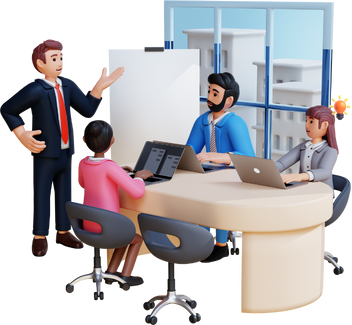
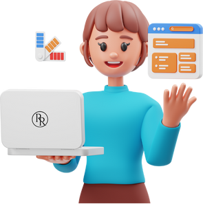
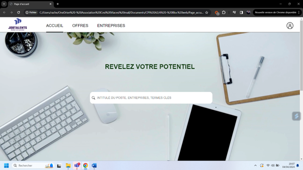
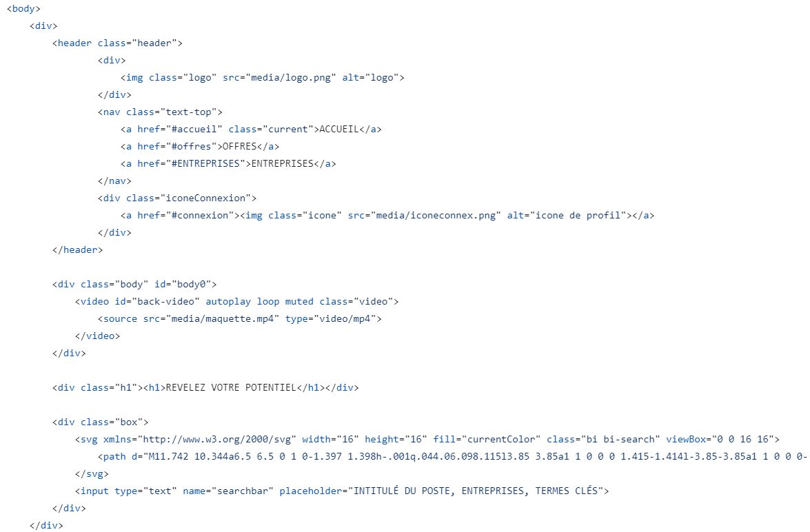

In order to improve the process of finding internships for students, our team is planning to develop a dedicated website. This initiative aims to simplify and optimize search for internships by grouping together internship offers and facilitating the management companies that have already taken on an intern, or are looking for one.
Group project
Main tasks :
• Creating mockups
• Creating diagrams : CDM, LDM for the database ; UML diagrams
• Development of web pages (front-end)
• Back-end development
Initially my main role was to take care of the design of the site so that it met the client's needs both aesthetically and ergonomically.
So I started by making mock-ups of the site
Once the design had been validated by the team and the client, I developed the home page and managed all the footer elements, making sure that the pages were responsive.
To realize the customer's needs, I began by creating a mock-up that met each functional specification. This mock-up illustrates several pages of the site, ensuring a complete representation of the required functionality.
So we have the Home page:
Once the mock-up was complete, I developed the home page using HTML, CSS and JavaScript.
On the home page, I've used the 'header' tag for the header of the page, which includes the logo and the various nav list elements. I was also able to include the video in the background thanks to the 'video' tag and the various parameters. And we can see the title with the navigation bar created with the 'input' tag.
To effectively manage our project, we used Excel to create a table detailing the different phases of the project. This table grouped the tasks to be completed and the team members assigned to each task.
Identification of Project Phases: The Excel table enabled us to divide the project into distinct phases, making it easier to manage and track tasks.
Planning details: Each task was assigned a start and end date, helping us to keep on schedule and anticipate deadlines. This detailed schedule enabled us to visualize the project's progress in real time.
We adopted a methodical approach to ensure clear communication and effective collaboration throughout the project.
Project milestone meetings: We held regular meetings to review the project's progress.
These meetings were essential for :
Review completed tasks.
Identify remaining tasks.
Discuss difficulties encountered and propose solutions.
Feedback and improvements: The meetings also enabled us to gather feedback from team members and adjust our working methods accordingly. This fostered an atmosphere of collaboration and continuous improvement.
Problem reporting: At our meetings, every member had the opportunity to report any difficulties encountered. This transparency enabled us to resolve problems quickly and efficiently. Support and Collaboration: By discussing challenges, we were able to offer support to members in difficulty and share useful resources or tips. This collaborative approach strengthened the team spirit and ensured the smooth running of the project. In short, our use of Excel to manage tasks and schedules, combined with regular meetings and open communication, was essential to the success of our project. This enabled effective coordination between team members and ensured that each phase of the project was completed on time.
This web development project was my very first in this field, and it gave me a solid understanding of the basics of web development.
In particular, I was able to deepen my knowledge of HTML, CSS, and JavaScript, working on the design and realization of the user
Although my main role focused on mockups and front-end development, I also had the opportunity to explore PHP a little.
This experience has sparked a keen interest in this programming language, and I'm motivated to deepen my knowledge and skills in this area.
This project has made it clear to me that web development is a career path I want to pursue. I'm passionate about the combination of aesthetic design, ergonomics and technical skills. In the future, I intend to concentrate more on learning and mastering PHP, while continuing to perfect my front-end skills.
To sum up, this experience not only provided me with a solid foundation in web development, but also strengthened my determination to evolve in this field, combining creativity and technical skills to produce innovative and functional projects.